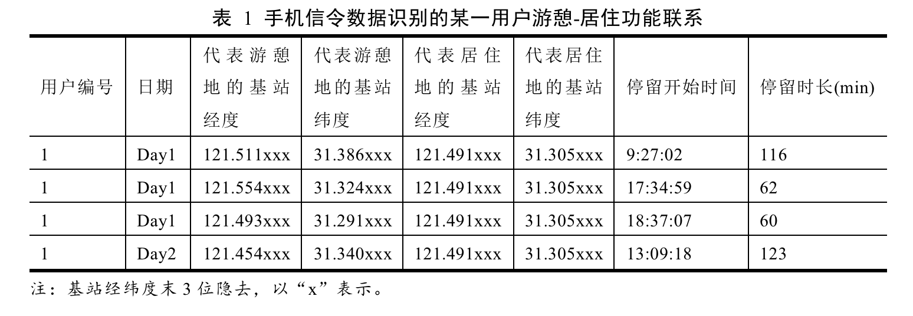
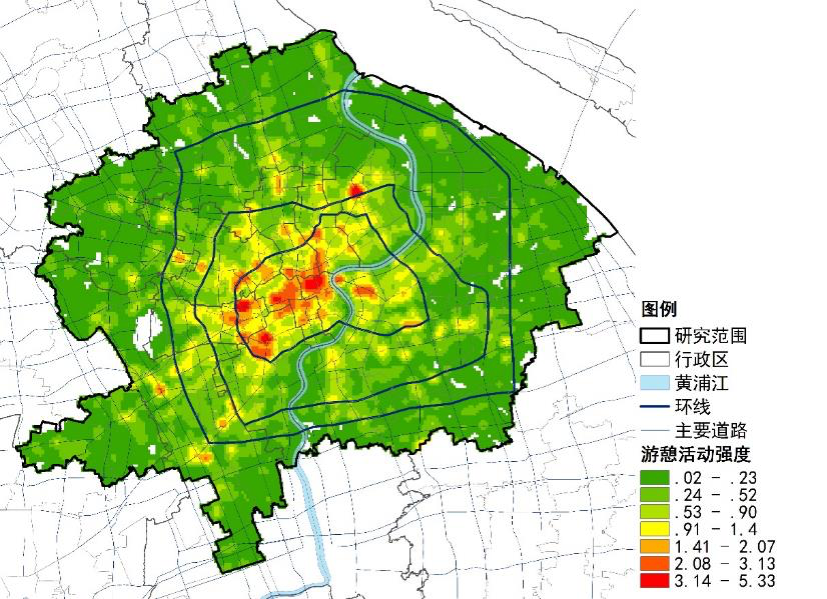
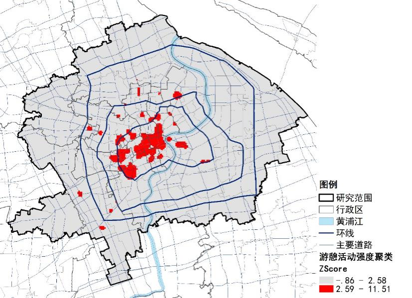
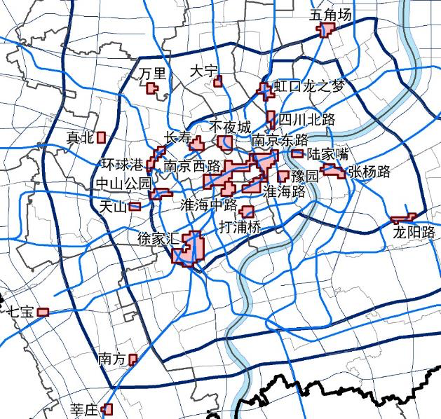
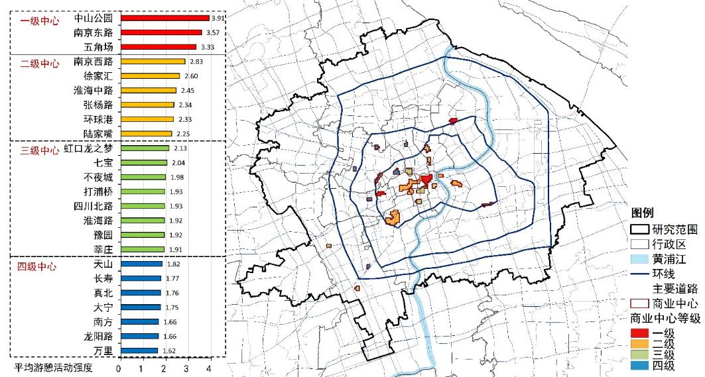
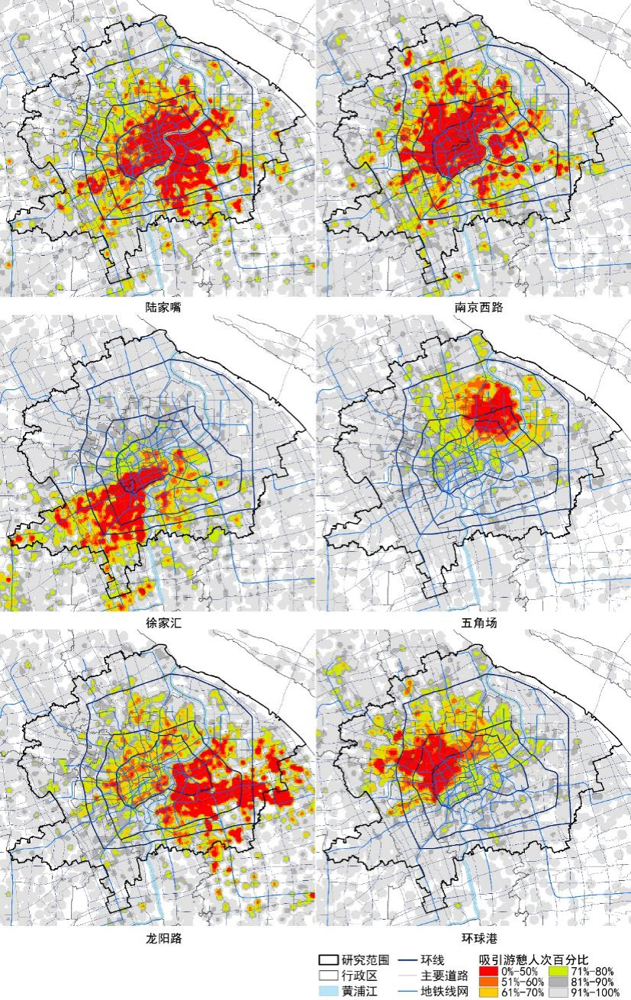
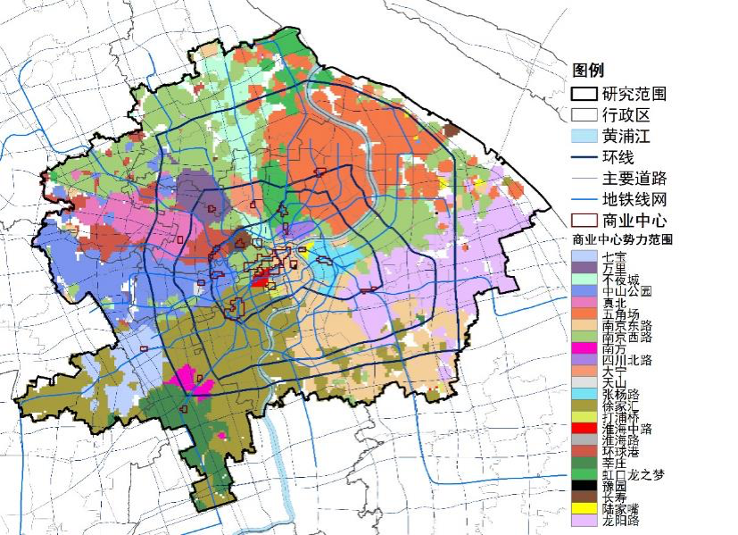
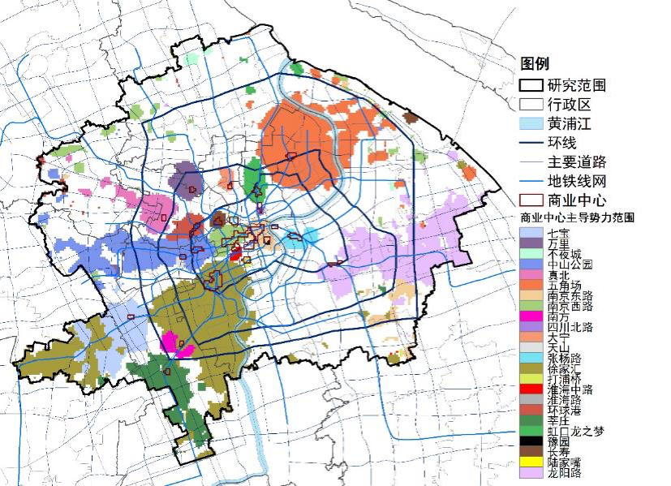
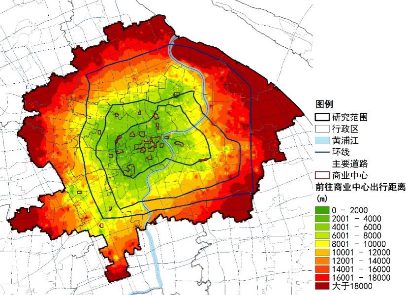
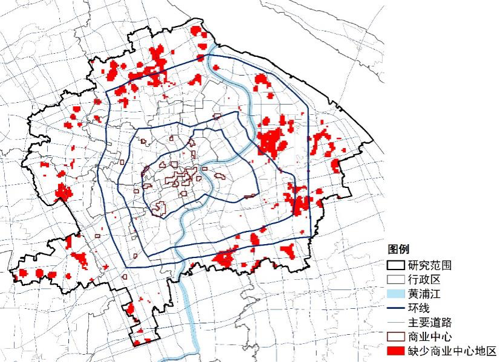

利用手机信令数据识别游憩-居住功能联系，进一步在上海中心城区内识别出了24个城市级商业中心。依据各中心单位面积对游憩活动的吸引力判断等级，依据游憩者来源地分析各中心腹地并划分势力范围，依据与现状商业中心的距离和居住人口密度确定了商业中心布局优化方向。得出以下结论：
近年来，有学者开始使用移动定位大数据研究商业中心，如社交网站签到数据、公共交通刷卡数据、浮动出租车定位数据、手机信令数据，等等（Sun，et al，2016；Liu，et al，2009；Zhong， et al，2014；周素红，等，2014；钮心毅，等，2014；王德，等，2015）。研究问题聚焦在如何识别商业中心中的购物、餐饮等游憩活动，如何识别商业中心范围、判断等级、分析服务范围等。笔者认为研究工作应遵循以下原则：一是应依据游憩行为规律识别游憩活动，特别是要排除途经者，否则像上海南京路这种带状商业中心，识别到的游憩者可能相当部分是乘地铁的途经者。二是应依据游憩活动实际发生范围识别商业中心，而不是凭经验人为划定商业中心的服务范围。三是应同时识别游憩者的居住地，分析游憩-居住功能联系。缺少了上述三条原则中任一条，就无法满足研究目标。
手机信令数据采集样本量大，只要用户开机，就能较为连续地记录移动轨迹，不受被调查者主观意志影响。目前已初步实现了识别就业-居住功能联系、识别就业中心、判断等级、分析各中心腹地和势力范围（丁亮，等，2016）。若能识别游憩-居住功能联系，类似方法也可用于商业中心的研究。笔者以手机信令为主要数据源，用乘坐地铁的公共交通刷卡记录做检验，研究上海中心城区商业中心的空间特征。
本项研究将商业中心的服务对象限定在上海中心城区内的居民，使用2015年11月连续16天（10个工作日和6个休息日）上海联通公司提供的手机信令数据，将休息日商业设施正常营业时间（定为9:00-21:00），某一手机用户在非工作地、非居住地以及非交通枢纽的某一小范围内连续停留超过30min即识别为游憩活动，所连接的基站就是该用户的游憩地。为了分析该用户从哪来，还需要识别居住地（丁亮，等，2016）。从524.5万活跃用户（10个工作日至少出现过6次的用户）中识别出了6个休息日229.7万人、588.1万人次的居住地和游憩地，得到游憩-居住功能联系数据（表1）。识别结果保留了游憩活动过程中可能有多个游憩地、停留时长不同的特征。
考虑到商业中心高至城市级、低至社区级，差异较大。为抓住商业中心的主要特征，本文讨论的商业中心限定在城市级商业中心。使用核密度分析，将游憩地识别结果转化为游憩活动强度(单位面积游憩活动量)，再对其做局部空间自相关分析，在1%显著性水平下选出高值聚类区，表明这些地区的游憩活动强度具有显著高值集聚特征。最后依据规划、传统认知以及土地使用现状图，筛选出了24个城市级商业中心。这些中心以只占中心城区1.2%的面积集聚了23.5%的游憩活动人次。
从空间分布来看，游憩活动强度呈由中心向外递减的特征，识别到的商业中心有近2/3分布在内环内，面积约占总面积的84.9%，内环外的中心数量少且面积较小，浦西中环以北和浦东内环以外大片地区没有达到识别标准的商业中心。因此，商业中心空间分布呈向心集聚，多中心特征不明显。
  用自然间断法将各中心平均游憩活动强度分为4个等级。传统意义上的城市主中心和副中心基本都是高等级中心（一级和二级），但也有例外。不夜城、四川北路和淮海路仅位列第三等级，说明这3个中心单位面积对游憩活动的吸引力较低。高等级中心主要集聚在内环内，但集聚趋势不显著，一级中心五角场和中山公园就分别位于中环东北部和内环西部，内环内还有6个三级中心和1个四级中心。
需要指出，本文根据中心城区范围内的本地居民对空间的使用情况来描述商业中心特征，未考虑外地游客，也未考虑设施自身规模、商品档次等因素。若将这些因素考虑进来，南京东路、淮海路、豫园这些中心的等级可能最高，而且可能需要从全市域、长三角、甚至全国层面来定位。
腹地是指商业中心吸引力、辐射力所能达到的范围，可直观反映各中心顾客来源地。6个典型商业中心的腹地如下图所示。总体来看，各中心所吸引游憩人次的居住密度都呈由自身向外逐渐下降，符合近距离出行多，远距离出行少的规律。具体来看，位于中心地区的传统商业中心南京东路主要腹地覆盖330km2、910万人，分布于浦西中环内和浦东黄浦江沿岸，沿地铁1号、9号线向西延伸；南京西路主要腹地覆盖356km2、1002万人，范围较偏北，沿地铁1号、7号线向北延伸至宝山新城。规划副中心徐家汇主要腹地覆盖194km2、466万人，分布于延安路高架和黄浦江形成的三角形区域内，沿地铁1号、9号线向西延，主要腹地虽跨黄浦江，但跨江后密度快速下降。五角场主要腹地覆盖176km2、461万人，呈圈层状，辐射到闸北区和外高桥、金桥地区。规划之外形成的新兴商业中心龙阳路主要腹地覆盖314km2、789万人，分布于浦东，沿地铁2号向东延伸、沿6号线沿黄浦江分布，浦西虽也有分布，但跨江密度下降明显；环球港主要腹地覆盖222km2、625万人，分布于延安路高架以北，沿地铁11号线向北延伸至嘉定区。
地铁对商业中心主要腹地分布有较大影响。位于中心地区的商业中心因地铁可向各个方向辐射，主要腹地分布较均匀；偏于中心城区一侧的中心因地铁向外侧辐射，强化了外围地区与中心的联系，腹地的方向性明显；五角场位于中心城区东北部，只有一条地铁10号线通过，且向北只延伸了约3km，故其主要腹地并未呈向外辐射状，而是向各个方向均匀分布。若地铁3号线和10号线之间有联络线，五角场的腹地很可能会向吴淞、宝山方向延伸。此外，黄浦江和延安路高架等对主要腹地分布范围有较强的空间分隔作用，可能这些自然、人工界限引起了跨界交通联系不便。
势力范围是指商业中心吸引力、辐射力占优势的地区，能直观反映不同地区居民日常生活服务主要前往哪个商业中心。由下图可见，各中心势力范围主要集中在自身及周边。势力范围依然存在沿地铁分布的特征，且受黄浦江、延安路高架的分隔。只有等级较高的南京东路、五角场、南京西路、徐家汇跨黄浦江还有势力范围。其余浦西、浦东的商业中心基本被局限在各自范围内。离商业中心较远的外环周边地区有多个中心的势力范围“飞地”，呈交替状。
去除势力范围争夺区，由下图可见，浦西北部和浦东6号地铁沿线地区不受任何一个中心主导。内环内中心因相互影响，主导势力范围面积都较小，陆家嘴、四川北路、淮海路、豫园甚至没有主导势力范围。外围中心主导势力范围都较大，其中徐家汇最大，达到了130km2，五角场其次，不依赖地铁而跨越黄浦江，达到了85km2，且主导势力范围和前50%游憩人次范围较接近。说明这两个中心虽然主要腹地范围不大，但却是这些地区居民就近前往商业中心游憩的主要选择，对这些地区居民日常生活服务具有重要作用，发挥了副中心的应有作用（也可认为，浦东北部居民缺乏高等级商业设施）。龙阳路虽然仅是四级中心，占主导的势力范围面积却高居第3位，达到了74km2，说明龙阳路游憩活动强度虽不高，但其在所服务地区的重要性不可取代。
一般来说，若某一地区居民前往商业中心的出行距离较远，且居住密度较高，则该地区缺少商业中心，居民的需求强烈。据此，首先计算居民前往商业中心的出行距离分布（图 8），呈现由中心向外圈层式递增的特征。浦东中环外、浦西北部外环周边和西部外环以外地区超过平均值13111m，说明这些地区居民前往商业中心出行距离较远。若超过平均值的地区居住密度又较高，说明居民对商业中心需求强烈，这些地区就是缺少商业中心的地区（图 9）。
中环内基本不缺商业中心，问题比较严重的地区主要在外环周边，如浦西北部的顾村、西部的华漕镇和九亭等地，浦东北部的外高桥和金桥、中部的张江、南部的三林等地。上述部分地区或附近会有商业中心，但等级较低，未达到本文识别要求，如庙行的宝山万达；部分地区规划了商业中心，但尚未实施，如三林、张江等。
 优化商业中心空间布局应考虑布置在居民前往商业中心出行距离较远、居住密度较高、游憩人次较多的地区。同时还要优化地铁线网布局，使内环以外新建的高等级商业中心能吸引多个方向的居民。实现上述目标，可以缩短这些地区居民前往现有商业中心的出行距离，也有助于缓解现状部分商业中心（如龙阳路）所承担的服务范围多大。
上海中心城区现状城市级商业中心的空间分布和等级分布都呈向心集聚，多中心特征不显著。商业中心主要腹地和势力范围沿地铁分布，黄浦江、延安路高架有较明显的空间分隔作用。徐家汇和五角场两个规划副中心主要腹地范围虽不大，但却是其主要腹地内居民前往商业中心游憩的首选，副中心的作用明显；规划之外形成的龙阳路商业中心服务范围过大，说明商业中心的规划已明显滞后于一般居民的生活需求，和居住区的扩展不相适应。中心城区商业中心布局优化，应考虑在外环周边顾村、张江、金桥、三林等地增加市级商业中心。